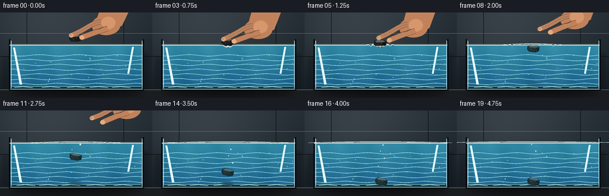
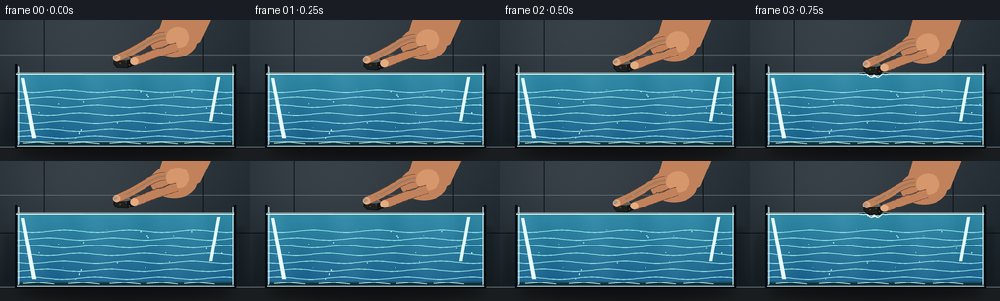
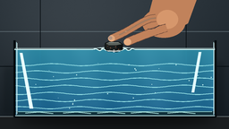
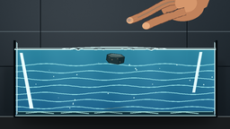
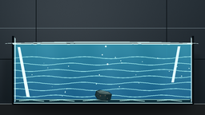

CODING AGENTS AS PIXEL WORLD MODELS
traex/GPT-5.6-Sol · phygen_006
点击播放 · 原生 RGB 像素
逐轮保存的候选
回放视频、检查图与代码变化。
每份候选均可单独播放。实际图片检查记录在下方工具轨迹中。
候选 01播放与检查图
点击播放 · 原生 RGB 像素


展开代码变化
--- 上一保存版本
+++ 本次保存版本
@@ -0,0 +1,336 @@
+from pathlib import Path
+import math
+import numpy as np
+from PIL import Image, ImageDraw, ImageFilter
+import artifact_io
+
+W, H, N = 256, 144, 20
+S = 4
+SW, SH = W*S, H*S
+CASE_DIR = Path(__file__).resolve().parent
+
+
+def q(v):
+ return int(round(v*S))
+
+
+def pts(seq):
+ return [(q(x), q(y)) for x, y in seq]
+
+
+def ellipse(draw, box, **kw):
+ draw.ellipse(tuple(q(x) for x in box), **kw)
+
+
+def line(draw, xy, fill, width=1, joint='curve'):
+ draw.line(pts(xy), fill=fill, width=max(1, q(width)), joint=joint)
+
+
+def polygon(draw, xy, **kw):
+ draw.polygon(pts(xy), **kw)
+
+
+def rounded(draw, box, radius, **kw):
+ draw.rounded_rectangle(tuple(q(x) for x in box), radius=q(radius), **kw)
+
+
+def bezier(p0, p1, p2, p3, steps=24):
+ out = []
+ for i in range(steps + 1):
+ t = i / steps
+ u = 1 - t
+ out.append((u**3*p0[0] + 3*u*u*t*p1[0] + 3*u*t*t*p2[0] + t**3*p3[0],
+ u**3*p0[1] + 3*u*u*t*p1[1] + 3*u*t*t*p2[1] + t**3*p3[1]))
+ return out
+
+
+def iron_pose(k):
+ if k <= 4:
+ return (127.0 + 0.15*math.sin(k), 43.0 + 2.15*k, -3.5 + .3*k)
+ if k == 5:
+ return (127.3, 52.2, -2.0)
+ d = k - 5
+ y = min(119.4, 52.2 + 1.45*d + .48*d*d)
+ x = 127.3 + 1.35*math.sin(d*.58) + .10*d
+ a = min(9.0, -2.0 + 1.12*d)
+ if y >= 119:
+ x = 129.3
+ a = 7.0
+ return x, y, a
+
+
+def surface_y(x, k):
+ y = 55.0 + .12*math.sin(x*.105 + k*.32)
+ if k >= 3:
+ age = k - 3
+ r = abs(x - 127.5)
+ # A soft dimple while the metal is being introduced.
+ if k <= 6:
+ y += (2.0 - .18*age) * math.exp(-(r/8.5)**2)
+ # Paired outward-running, damped surface waves.
+ rad = 4.0 + age*6.1
+ amp = 1.40*math.exp(-age/8.5)
+ y += amp * math.exp(-((r-rad)/5.2)**2) * math.cos((r-rad)*.65)
+ rad2 = max(0, age*3.1)
+ y += .55*math.exp(-age/7.0)*math.exp(-((r-rad2)/7.0)**2)*math.sin((r-rad2)*.72)
+ return y
+
+
+def rotate_shape(shape, cx, cy, ang):
+ a = math.radians(ang)
+ ca, sa = math.cos(a), math.sin(a)
+ return [(cx + ca*x - sa*y, cy + sa*x + ca*y) for x, y in shape]
+
+
+def make_background(k):
+ yy, xx = np.mgrid[0:SH, 0:SW]
+ y = yy / S
+ x = xx / S
+ # Cool laboratory wall, subtly vignetted and illuminated from the left.
+ top = np.array([46., 55., 62.])
+ bot = np.array([27., 35., 41.])
+ t = np.clip(y / 144., 0, 1)[..., None]
+ arr = top*(1-t) + bot*t
+ glow = 15*np.exp(-((x-72.)**2/(2*76**2) + (y-27.)**2/(2*56**2)))
+ vignette = 12*((x-128.)/170.)**2 + 5*((y-70.)/105.)**2
+ arr += glow[..., None]
+ arr -= vignette[..., None]
+ # Tiny fixed film grain prevents sterile flat gradients.
+ rng = np.random.default_rng(617)
+ grain = rng.normal(0, .75, (SH, SW, 1))
+ arr += grain
+ img = Image.fromarray(np.uint8(np.clip(arr, 0, 255)), 'RGB').convert('RGBA')
+ d = ImageDraw.Draw(img, 'RGBA')
+ # Dim tiled wall seams and a blurred vertical light panel.
+ line(d, [(0, 35), (256, 35)], (116, 132, 139, 30), .55)
+ line(d, [(0, 74), (256, 74)], (5, 13, 18, 28), .7)
+ line(d, [(45, 0), (45, 131)], (8, 14, 18, 32), .7)
+ line(d, [(208, 0), (208, 131)], (7, 13, 17, 28), .65)
+ # Out-of-focus laboratory bottle silhouettes.
+ blur = Image.new('RGBA', (SW, SH), (0,0,0,0))
+ b = ImageDraw.Draw(blur, 'RGBA')
+ rounded(b, (5, 75, 19, 127), 3, fill=(9, 18, 22, 80))
+ rounded(b, (237, 69, 249, 128), 2, fill=(7, 14, 19, 70))
+ blur = blur.filter(ImageFilter.GaussianBlur(q(2.4)))
+ img = Image.alpha_composite(img, blur)
+ d = ImageDraw.Draw(img, 'RGBA')
+ # Counter and soft cast shadow beneath aquarium.
+ polygon(d, [(0,130), (256,130), (256,144), (0,144)], fill=(26,29,31,255))
+ line(d, [(0,130), (256,130)], (113,124,126,75), .8)
+ shadow = Image.new('RGBA', (SW, SH), (0,0,0,0))
+ sd = ImageDraw.Draw(shadow, 'RGBA')
+ ellipse(sd, (18,125,240,142), fill=(0,0,0,125))
+ shadow = shadow.filter(ImageFilter.GaussianBlur(q(5)))
+ return Image.alpha_composite(img, shadow)
+
+
+def draw_water(img, k):
+ # Curving water top is used as an actual alpha mask.
+ sy = [surface_y(x, k) for x in range(W)]
+ mask = Image.new('L', (SW, SH), 0)
+ md = ImageDraw.Draw(mask)
+ waterpoly = [(q(x), q(sy[x])) for x in range(16,241)] + [(q(240),q(128)),(q(16),q(128))]
+ md.polygon(waterpoly, fill=244)
+ yy, xx = np.mgrid[0:SH, 0:SW]
+ y = yy/S
+ dep = np.clip((y-54)/76, 0, 1)
+ # Transparent turquoise water gets darker with depth.
+ r = 50 - 20*dep
+ g = 143 - 42*dep
+ b = 170 - 24*dep
+ shimmer = 4*np.sin(xx/S*.075 + k*.22) + 2*np.sin(xx/S*.18 - yy/S*.045)
+ rgba = np.zeros((SH, SW, 4), dtype=np.uint8)
+ rgba[...,0] = np.clip(r+shimmer,0,255)
+ rgba[...,1] = np.clip(g+shimmer,0,255)
+ rgba[...,2] = np.clip(b+shimmer,0,255)
+ rgba[...,3] = np.asarray(mask)
+ img.alpha_composite(Image.fromarray(rgba, 'RGBA'))
+ d = ImageDraw.Draw(img, 'RGBA')
+ # Caustic strands and suspended motes, clipped by conservative tank bounds.
+ for j in range(7):
+ base = 72 + j*8
+ wav = [(17 + u, base + 1.2*math.sin((u+j*17+k*1.7)*.095)) for u in range(0,224,3)]
+ line(d, wav, (149,224,229,10 if j<5 else 7), 1.0)
+ rng = np.random.default_rng(91)
+ for i in range(24):
+ x = 20 + rng.random()*216
+ y0 = 61 + rng.random()*61
+ y = y0 - ((k*.06 + i*.017) % 1.2)
+ rr = .23 + rng.random()*.35
+ ellipse(d, (x-rr,y-rr,x+rr,y+rr), fill=(197,240,239,30))
+ return sy
+
+
+def draw_bottom_and_tank(img, k, sy):
+ d = ImageDraw.Draw(img, 'RGBA')
+ # Pale sediment-free tank base and refracted highlight.
+ polygon(d, [(17,124),(240,124),(237,130),(20,130)], fill=(17,50,61,145))
+ line(d, [(20,124.4),(237,124.4)], (151,222,222,55), .8)
+ # Moving caustics along the floor.
+ for j in range(5):
+ x = 39 + j*42 + 5*math.sin(k*.20+j)
+ line(d, [(x-15,126.1),(x,124.7),(x+16,126.4)], (185,241,235,34), 1.1)
+ # Glass frame: dark edge outside, cyan glint inside.
+ line(d, [(16,45),(16,130),(241,130),(241,45)], (4,11,15,210), 2.5)
+ line(d, [(18.2,47),(18.2,127.8)], (176,220,225,95), .75)
+ line(d, [(238.8,47),(238.8,128)], (176,220,225,80), .7)
+ line(d, [(17,129),(240,129)], (181,218,220,105), 1.0)
+ # Top rim behind the moving water.
+ line(d, [(16,54.6),(241,54.6)], (4,14,19,105), 1.7)
+ line(d, [(17,53.6),(240,53.6)], (197,230,232,72), .55)
+ # Active surface line and broken specular streaks.
+ surf = [(x, sy[x]) for x in range(16,241)]
+ line(d, surf, (202,242,241,205), 1.15)
+ line(d, [(22,sy[22]-.55),(85,sy[85]-.45)], (245,255,252,95), .62)
+ line(d, [(164,sy[164]-.55),(228,sy[228]-.38)], (240,255,252,75), .55)
+ # Ripples seen as shallow elliptical rings on the horizontal surface plane.
+ if k >= 4:
+ age = k-4
+ a = max(12, 14+age*9)
+ alpha = int(120*math.exp(-age/8.2))
+ for m in range(2):
+ aa = a-m*9
+ if aa > 5:
+ box=(127-aa, 52.4-m*.15, 127+aa, 57.1+m*.22)
+ # only top/front arc gives a glassy perspective ring
+ draw = ImageDraw.Draw(img, 'RGBA')
+ draw.arc(tuple(q(v) for v in box), 188, 352, fill=(217,249,247,alpha//(m+1)), width=q(.65))
+
+
+def draw_shadow(img, k):
+ x,y,a = iron_pose(k)
+ if y < 57: return
+ gap = max(0, 120-y)
+ strength = int(92*(1-gap/70))
+ width = 16 + gap*.16
+ layer=Image.new('RGBA',(SW,SH),(0,0,0,0)); d=ImageDraw.Draw(layer,'RGBA')
+ ellipse(d,(x-width/2,122.2,x+width/2,125.7),fill=(0,8,11,max(0,strength)))
+ layer=layer.filter(ImageFilter.GaussianBlur(q(1.5+gap*.02)))
+ img.alpha_composite(layer)
+
+
+def draw_bubbles(img, k):
+ if k < 7: return
+ d=ImageDraw.Draw(img,'RGBA')
+ starts=[7,7,8,9,10,11,12,13,14]
+ offsets=[-7,5,-3,8,-6,3,-1,6,-4]
+ sizes=[1.25,.75,.9,1.4,.65,1.0,.7,.95,.6]
+ for i,(st,off,rad) in enumerate(zip(starts,offsets,sizes)):
+ if k < st: continue
+ _, y0, _ = iron_pose(st)
+ age=k-st
+ y=y0-2.2-age*(2.6+.20*i)
+ x=128+off+1.2*math.sin(age*.72+i)
+ if y <= surface_y(int(max(16,min(240,x))),k)+1: continue
+ ellipse(d,(x-rad,y-rad,x+rad,y+rad),fill=(201,238,238,15),outline=(224,252,250,155),width=q(.48))
+ ellipse(d,(x-rad*.45,y-rad*.62,x-rad*.02,y-rad*.20),fill=(255,255,255,155))
+
+
+def draw_iron(img, k):
+ cx,cy,ang=iron_pose(k)
+ shape=[(-10,-4.5),(-5.5,-6.3),(5.8,-5.5),(10,-2.6),(9.2,4.0),(3.0,6.2),(-7.5,5.0),(-10.7,1.2)]
+ poly=rotate_shape(shape,cx,cy,ang)
+ layer=Image.new('RGBA',(SW,SH),(0,0,0,0)); d=ImageDraw.Draw(layer,'RGBA')
+ # Tiny halo gives the dark object separation underwater.
+ polygon(d,poly,fill=(28,32,31,255),outline=(5,8,8,245),width=q(.7))
+ top=rotate_shape([(-9,-4.1),(-5.3,-5.8),(5.5,-5.1),(8.9,-2.7),(3.2,-1.8),(-5.2,-2.0)],cx,cy,ang)
+ polygon(d,top,fill=(90,96,91,255))
+ side=rotate_shape([(8.9,-2.7),(9.1,3.7),(3,5.8),(3.2,-1.8)],cx,cy,ang)
+ polygon(d,side,fill=(17,20,20,255))
+ # Scraped silvery edge and warm oxidation freckles identify rough iron.
+ e1=rotate_shape([(-5.2,-5.2),(5.1,-4.5)],cx,cy,ang)
+ line(d,e1,(174,183,174,215),.75)
+ for ox,oy,r in [(-4,1,.7),(2,-.2,.55),(5,3,.5),(-7,-1,.38)]:
+ p=rotate_shape([(ox,oy)],cx,cy,ang)[0]
+ ellipse(d,(p[0]-r,p[1]-r,p[0]+r,p[1]+r),fill=(119,67,42,210))
+ # Blue veil over the submerged portion, clipped below local water level.
+ waterline=surface_y(int(max(16,min(240,cx))),k)
+ veil=Image.new('RGBA',(SW,SH),(0,0,0,0)); vd=ImageDraw.Draw(veil,'RGBA')
+ polygon(vd,poly,fill=(31,116,137,58))
+ clip=Image.new('L',(SW,SH),0); cd=ImageDraw.Draw(clip)
+ cd.rectangle((0,q(waterline),SW,SH),fill=255)
+ veil.putalpha(Image.composite(veil.getchannel('A'),Image.new('L',(SW,SH),0),clip))
+ layer=Image.alpha_composite(layer,veil)
+ img.alpha_composite(layer)
+ return cx,cy
+
+
+def draw_hand(img, k):
+ # Fingers remain in contact through frame 4, separate on frame 5, then withdraw.
+ if k >= 13: return
+ cx,cy,_=iron_pose(min(k,5))
+ if k <= 4:
+ p=0.0; lower=2.15*k
+ else:
+ p=min(1,(k-4)/8); lower=8.6
+ dx=40*p; dy=-37*p
+ skin=(193,130,91,255); light=(229,172,128,255); shade=(116,73,55,210)
+ layer=Image.new('RGBA',(SW,SH),(0,0,0,0)); d=ImageDraw.Draw(layer,'RGBA')
+ # Wrist and palm from upper right.
+ polygon(d,[(168+dx,-5+dy),(218+dx,-5+dy),(205+dx,22+lower+dy),(181+dx,35+lower+dy),(158+dx,24+lower+dy)],fill=skin)
+ ellipse(d,(154+dx,5+lower+dy,202+dx,38+lower+dy),fill=skin)
+ # Knuckle modeling.
+ ellipse(d,(170+dx,7+lower+dy,194+dx,28+lower+dy),fill=(214,151,108,255))
+ # Index and thumb endpoints open as the hand retreats.
+ idx_end=(119.5+dx, cy-4.4+dy-3*p)
+ th_end=(137.3+dx, cy-1.0+dy+1*p)
+ index=bezier((169+dx,16+lower+dy),(154+dx,17+lower+dy),(144+dx,29+lower+dy),idx_end)
+ thumb=bezier((181+dx,27+lower+dy),(166+dx,31+lower+dy),(151+dx,37+lower+dy),th_end)
+ # Soft dark outlines below fingers, then flesh core and highlight.
+ line(d,index,shade,8.6); line(d,index,skin,7.4)
+ line(d,thumb,shade,9.4); line(d,thumb,skin,8.2)
+ line(d,index[:-3],(235,178,134,120),1.0)
+ ellipse(d,(idx_end[0]-3.8,idx_end[1]-3.5,idx_end[0]+3.8,idx_end[1]+3.5),fill=light)
+ ellipse(d,(th_end[0]-4.1,th_end[1]-3.8,th_end[0]+4.1,th_end[1]+3.8),fill=light)
+ # Small natural nail on index fingertip and palm creases.
+ nail=(idx_end[0]-3.3,idx_end[1]-2.6,idx_end[0]+.8,idx_end[1]+1.4)
+ ellipse(d,nail,fill=(238,190,160,180))
+ crease=bezier((173+dx,24+lower+dy),(168+dx,28+lower+dy),(164+dx,29+lower+dy),(160+dx,28+lower+dy),10)
+ line(d,crease,(120,74,55,80),.65)
+ # Gentle highlight feather.
+ glow=Image.new('RGBA',(SW,SH),(0,0,0,0)); gd=ImageDraw.Draw(glow,'RGBA')
+ line(gd,index,(255,208,165,55),1.8)
+ glow=glow.filter(ImageFilter.GaussianBlur(q(.7)))
+ layer=Image.alpha_composite(layer,glow)
+ img.alpha_composite(layer)
+
+
+def draw_foreground_glass(img,k):
+ d=ImageDraw.Draw(img,'RGBA')
+ # Sparse glass reflections, restrained so the event remains readable.
+ polygon(d,[(22,59),(25,59),(37,121),(33,121)],fill=(232,255,255,15))
+ polygon(d,[(222,58),(225,58),(217,103),(214,103)],fill=(225,250,252,12))
+ line(d,[(19,48),(19,127)],(238,255,255,55),.45)
+ line(d,[(239,48),(239,127)],(236,255,255,45),.45)
+ # A contact sparkle where the metal crosses the surface.
+ if 3 <= k <= 7:
+ x,_,_=iron_pose(k)
+ sy=surface_y(int(x),k)
+ a=180-int(abs(k-5)*35)
+ line(d,[(x-7,sy),(x+7,sy)],(246,255,252,a),.8)
+ ellipse(d,(x-1.3,sy-1.3,x+1.3,sy+1.3),outline=(255,255,255,a),width=q(.45))
+
+
+def render(k):
+ img=make_background(k)
+ sy=draw_water(img,k)
+ draw_bottom_and_tank(img,k,sy)
+ draw_shadow(img,k)
+ draw_bubbles(img,k)
+ draw_iron(img,k)
+ draw_hand(img,k)
+ # Reassert the near surface over hand/object intersections and glass face.
+ d=ImageDraw.Draw(img,'RGBA')
+ line(d,[(x,sy[x]) for x in range(16,241)],(211,246,244,170),.62)
+ draw_foreground_glass(img,k)
+ out=img.convert('RGB').resize((W,H),Image.Resampling.LANCZOS)
+ return np.asarray(out,dtype=np.uint8)
+
+
+def main():
+ frames=np.stack([render(k) for k in range(N)],axis=0)
+ artifact_io.save(frames,CASE_DIR)
+
+
+if __name__=='__main__':
+ main()
可观测工具轨迹
实际执行的命令与返回图片。
命令 1exit 0
/bin/bash -lc "cat prompt.txt && printf '\\n--- GENERATION_RULES ---\\n' && cat GENERATION_RULES.md && printf '\\n--- TASK_SPEC ---\\n' && cat task_spec.json"
命令 2exit 0
/bin/bash -lc "find . -maxdepth 2 -type f -printf '%p\\n' | sort && printf '\\n--- binaries ---\\n' && command -v ffmpeg || true && command -v python3 || true && command -v blender || true"
命令 3exit 0
/bin/bash -lc "sed -n '1,240p' artifact_io.py"
命令 4exit 0
/bin/bash -lc "python3 - <<'PY' mods=['numpy','PIL','cv2','imageio','matplotlib','scipy'] for m in mods: try: mod=__import__(m) print(m, getattr(mod,'__version__','ok')) except Exception as e: print(m,'NO',e) PY"
命令 5exit 0
/bin/bash -lc "cat > generate.py <<'PY'
from pathlib import Path
import math
import numpy as np
from PIL import Image, ImageDraw, ImageFilter
import artifact_io
W, H, N = 256, 144, 20
S = 4
SW, SH = W*S, H*S
CASE_DIR = Path(__file__).resolve().parent
def q(v):
return int(round(v*S))
def pts(seq):
return [(q(x), q(y)) for x, y in seq]
def ellipse(draw, box, **kw):
draw.ellipse(tuple(q(x) for x in box), **kw)
def line(draw, xy, fill, width=1, joint='curve'):
draw.line(pts(xy), fill=fill, width=max(1, q(width)), joint=joint)
def polygon(draw, xy, **kw):
draw.polygon(pts(xy), **kw)
def rounded(draw, box, radius, **kw):
draw.rounded_rectangle(tuple(q(x) for x in box), radius=q(radius), **kw)
def bezier(p0, p1, p2, p3, steps=24):
out = []
for i in range(steps + 1):
t = i / steps
u = 1 - t
out.append((u**3*p0[0] + 3*u*u*t*p1[0] + 3*u*t*t*p2[0] + t**3*p3[0],
u**3*p0[1] + 3*u*u*t*p1[1] + 3*u*t*t*p2[1] + t**3*p3[1]))
return out
def iron_pose(k):
if k <= 4:
return (127.0 + 0.15*math.sin(k), 43.0 + 2.15*k, -3.5 + .3*k)
if k == 5:
return (127.3, 52.2, -2.0)
d = k - 5
y = min(119.4, 52.2 + 1.45*d + .48*d*d)
x = 127.3 + 1.35*math.sin(d*.58) + .10*d
a = min(9.0, -2.0 + 1.12*d)
if y >= 119:
x = 129.3
a = 7.0
return x, y, a
def surface_y(x, k):
y = 55.0 + .12*math.sin(x*.105 + k*.32)
if k >= 3:
age = k - 3
r = abs(x - 127.5)
# A soft dimple while the metal is being introduced.
if k <= 6:
y += (2.0 - .18*age) * math.exp(-(r/8.5)**2)
# Paired outward-running, damped surface waves.
rad = 4.0 + age*6.1
amp = 1.40*math.exp(-age/8.5)
y += amp * math.exp(-((r-rad)/5.2)**2) * math.cos((r-rad)*.65)
rad2 = max(0, age*3.1)
y += .55*math.exp(-age/7.0)*math.exp(-((r-rad2)/7.0)**2)*math.sin((r-rad2)*.72)
return y
def rotate_shape(shape, cx, cy, ang):
a = math.radians(ang)
ca, sa = math.cos(a), math.sin(a)
return [(cx + ca*x - sa*y, cy + sa*x + ca*y) for x, y in shape]
def make_background(k):
yy, xx = np.mgrid[0:SH, 0:SW]
y = yy / S
x = xx / S
# Cool laboratory wall, subtly vignetted and illuminated from the left.
top = np.array([46., 55., 62.])
bot = np.array([27., 35., 41.])
t = np.clip(y / 144., 0, 1)[..., None]
arr = top*(1-t) + bot*t
glow = 15*np.exp(-((x-72.)**2/(2*76**2) + (y-27.)**2/(2*56**2)))
vignette = 12*((x-128.)/170.)**2 + 5*((y-70.)/105.)**2
arr += glow[..., None]
arr -= vignette[..., None]
# Tiny fixed film grain prevents sterile flat gradients.
rng = np.random.default_rng(617)
grain = rng.normal(0, .75, (SH, SW, 1))
arr += grain
img = Image.fromarray(np.uint8(np.clip(arr, 0, 255)), 'RGB').convert('RGBA')
d = ImageDraw.Draw(img, 'RGBA')
# Dim tiled wall seams and a blurred vertical light panel.
line(d, [(0, 35), (256, 35)], (116, 132, 139, 30), .55)
line(d, [(0, 74), (256, 74)], (5, 13, 18, 28), .7)
line(d, [(45, 0), (45, 131)], (8, 14, 18, 32), .7)
line(d, [(208, 0), (208, 131)], (7, 13, 17, 28), .65)
# Out-of-focus laboratory bottle silhouettes.
blur = Image.new('RGBA', (SW, SH), (0,0,0,0))
b = ImageDraw.Draw(blur, 'RGBA')
rounded(b, (5, 75, 19, 127), 3, fill=(9, 18, 22, 80))
rounded(b, (237, 69, 249, 128), 2, fill=(7, 14, 19, 70))
blur = blur.filter(ImageFilter.GaussianBlur(q(2.4)))
img = Image.alpha_composite(img, blur)
d = ImageDraw.Draw(img, 'RGBA')
# Counter and soft cast shadow beneath aquarium.
polygon(d, [(0,130), (256,130), (256,144), (0,144)], fill=(26,29,31,255))
line(d, [(0,130), (256,130)], (113,124,126,75), .8)
shadow = Image.new('RGBA', (SW, SH), (0,0,0,0))
sd = ImageDraw.Draw(shadow, 'RGBA')
ellipse(sd, (18,125,240,142), fill=(0,0,0,125))
shadow = shadow.filter(ImageFilter.GaussianBlur(q(5)))
return Image.alpha_composite(img, shadow)
def draw_water(img, k):
# Curving water top is used as an actual alpha mask.
sy = [surface_y(x, k) for x in range(W)]
mask = Image.new('L', (SW, SH), 0)
md = ImageDraw.Draw(mask)
waterpoly = [(q(x), q(sy[x])) for x in range(16,241)] + [(q(240),q(128)),(q(16),q(128))]
md.polygon(waterpoly, fill=244)
yy, xx = np.mgrid[0:SH, 0:SW]
y = yy/S
dep = np.clip((y-54)/76, 0, 1)
# Transparent turquoise water gets darker with depth.
r = 50 - 20*dep
g = 143 - 42*dep
b = 170 - 24*dep
shimmer = 4*np.sin(xx/S*.075 + k*.22) + 2*np.sin(xx/S*.18 - yy/S*.045)
rgba = np.zeros((SH, SW, 4), dtype=np.uint8)
rgba[...,0] = np.clip(r+shimmer,0,255)
rgba[...,1] = np.clip(g+shimmer,0,255)
rgba[...,2] = np.clip(b+shimmer,0,255)
rgba[...,3] = np.asarray(mask)
img.alpha_composite(Image.fromarray(rgba, 'RGBA'))
d = ImageDraw.Draw(img, 'RGBA')
# Caustic strands and suspended motes, clipped by conservative tank bounds.
for j in range(7):
base = 72 + j*8
wav = [(17 + u, base + 1.2*math.sin((u+j*17+k*1.7)*.095)) for u in range(0,224,3)]
line(d, wav, (149,224,229,10 if j<5 else 7), 1.0)
rng = np.random.default_rng(91)
for i in range(24):
x = 20 + rng.random()*216
y0 = 61 + rng.random()*61
y = y0 - ((k*.06 + i*.017) % 1.2)
rr = .23 + rng.random()*.35
ellipse(d, (x-rr,y-rr,x+rr,y+rr), fill=(197,240,239,30))
return sy
def draw_bottom_and_tank(img, k, sy):
d = ImageDraw.Draw(img, 'RGBA')
# Pale sediment-free tank base and refracted highlight.
polygon(d, [(17,124),(240,124),(237,130),(20,130)], fill=(17,50,61,145))
line(d, [(20,124.4),(237,124.4)], (151,222,222,55), .8)
# Moving caustics along the floor.
for j in range(5):
x = 39 + j*42 + 5*math.sin(k*.20+j)
line(d, [(x-15,126.1),(x,124.7),(x+16,126.4)], (185,241,235,34), 1.1)
# Glass frame: dark edge outside, cyan glint inside.
line(d, [(16,45),(16,130),(241,130),(241,45)], (4,11,15,210), 2.5)
line(d, [(18.2,47),(18.2,127.8)], (176,220,225,95), .75)
line(d, [(238.8,47),(238.8,128)], (176,220,225,80), .7)
line(d, [(17,129),(240,129)], (181,218,220,105), 1.0)
# Top rim behind the moving water.
line(d, [(16,54.6),(241,54.6)], (4,14,19,105), 1.7)
line(d, [(17,53.6),(240,53.6)], (197,230,232,72), .55)
# Active surface line and broken specular streaks.
surf = [(x, sy[x]) for x in range(16,241)]
line(d, surf, (202,242,241,205), 1.15)
line(d, [(22,sy[22]-.55),(85,sy[85]-.45)], (245,255,252,95), .62)
line(d, [(164,sy[164]-.55),(228,sy[228]-.38)], (240,255,252,75), .55)
# Ripples seen as shallow elliptical rings on the horizontal surface plane.
if k >= 4:
age = k-4
a = max(12, 14+age*9)
alpha = int(120*math.exp(-age/8.2))
for m in range(2):
aa = a-m*9
if aa > 5:
box=(127-aa, 52.4-m*.15, 127+aa, 57.1+m*.22)
# only top/front arc gives a glassy perspective ring
draw = ImageDraw.Draw(img, 'RGBA')
draw.arc(tuple(q(v) for v in box), 188, 352, fill=(217,249,247,alpha//(m+1)), width=q(.65))
def draw_shadow(img, k):
x,y,a = iron_pose(k)
if y < 57: return
gap = max(0, 120-y)
strength = int(92*(1-gap/70))
width = 16 + gap*.16
layer=Image.new('RGBA',(SW,SH),(0,0,0,0)); d=ImageDraw.Draw(layer,'RGBA')
ellipse(d,(x-width/2,122.2,x+width/2,125.7),fill=(0,8,11,max(0,strength)))
layer=layer.filter(ImageFilter.GaussianBlur(q(1.5+gap*.02)))
img.alpha_composite(layer)
def draw_bubbles(img, k):
if k < 7: return
d=ImageDraw.Draw(img,'RGBA')
starts=[7,7,8,9,10,11,12,13,14]
offsets=[-7,5,-3,8,-6,3,-1,6,-4]
sizes=[1.25,.75,.9,1.4,.65,1.0,.7,.95,.6]
for i,(st,off,rad) in enumerate(zip(starts,offsets,sizes)):
if k < st: continue
_, y0, _ = iron_pose(st)
age=k-st
y=y0-2.2-age*(2.6+.20*i)
x=128+off+1.2*math.sin(age*.72+i)
if y <= surface_y(int(max(16,min(240,x))),k)+1: continue
ellipse(d,(x-rad,y-rad,x+rad,y+rad),fill=(201,238,238,15),outline=(224,252,250,155),width=q(.48))
ellipse(d,(x-rad*.45,y-rad*.62,x-rad*.02,y-rad*.20),fill=(255,255,255,155))
def draw_iron(img, k):
cx,cy,ang=iron_pose(k)
shape=[(-10,-4.5),(-5.5,-6.3),(5.8,-5.5),(10,-2.6),(9.2,4.0),(3.0,6.2),(-7.5,5.0),(-10.7,1.2)]
poly=rotate_shape(shape,cx,cy,ang)
layer=Image.new('RGBA',(SW,SH),(0,0,0,0)); d=ImageDraw.Draw(layer,'RGBA')
# Tiny halo gives the dark object separation underwater.
polygon(d,poly,fill=(28,32,31,255),outline=(5,8,8,245),width=q(.7))
top=rotate_shape([(-9,-4.1),(-5.3,-5.8),(5.5,-5.1),(8.9,-2.7),(3.2,-1.8),(-5.2,-2.0)],cx,cy,ang)
polygon(d,top,fill=(90,96,91,255))
side=rotate_shape([(8.9,-2.7),(9.1,3.7),(3,5.8),(3.2,-1.8)],cx,cy,ang)
polygon(d,side,fill=(17,20,20,255))
# Scraped silvery edge and warm oxidation freckles identify rough iron.
e1=rotate_shape([(-5.2,-5.2),(5.1,-4.5)],cx,cy,ang)
line(d,e1,(174,183,174,215),.75)
for ox,oy,r in [(-4,1,.7),(2,-.2,.55),(5,3,.5),(-7,-1,.38)]:
p=rotate_shape([(ox,oy)],cx,cy,ang)[0]
ellipse(d,(p[0]-r,p[1]-r,p[0]+r,p[1]+r),fill=(119,67,42,210))
# Blue veil over the submerged portion, clipped below local water level.
waterline=surface_y(int(max(16,min(240,cx))),k)
veil=Image.new('RGBA',(SW,SH),(0,0,0,0)); vd=ImageDraw.Draw(veil,'RGBA')
polygon(vd,poly,fill=(31,116,137,58))
clip=Image.new('L',(SW,SH),0); cd=ImageDraw.Draw(clip)
cd.rectangle((0,q(waterline),SW,SH),fill=255)
veil.putalpha(Image.composite(veil.getchannel('A'),Image.new('L',(SW,SH),0),clip))
layer=Image.alpha_composite(layer,veil)
img.alpha_composite(layer)
return cx,cy
def draw_hand(img, k):
# Fingers remain in contact through frame 4, separate on frame 5, then withdraw.
if k >= 13: return
cx,cy,_=iron_pose(min(k,5))
if k <= 4:
p=0.0; lower=2.15*k
else:
p=min(1,(k-4)/8); lower=8.6
dx=40*p; dy=-37*p
skin=(193,130,91,255); light=(229,172,128,255); shade=(116,73,55,210)
layer=Image.new('RGBA',(SW,SH),(0,0,0,0)); d=ImageDraw.Draw(layer,'RGBA')
# Wrist and palm from upper right.
polygon(d,[(168+dx,-5+dy),(218+dx,-5+dy),(205+dx,22+lower+dy),(181+dx,35+lower+dy),(158+dx,24+lower+dy)],fill=skin)
ellipse(d,(154+dx,5+lower+dy,202+dx,38+lower+dy),fill=skin)
# Knuckle modeling.
ellipse(d,(170+dx,7+lower+dy,194+dx,28+lower+dy),fill=(214,151,108,255))
# Index and thumb endpoints open as the hand retreats.
idx_end=(119.5+dx, cy-4.4+dy-3*p)
th_end=(137.3+dx, cy-1.0+dy+1*p)
index=bezier((169+dx,16+lower+dy),(154+dx,17+lower+dy),(144+dx,29+lower+dy),idx_end)
thumb=bezier((181+dx,27+lower+dy),(166+dx,31+lower+dy),(151+dx,37+lower+dy),th_end)
# Soft dark outlines below fingers, then flesh core and highlight.
line(d,index,shade,8.6); line(d,index,skin,7.4)
line(d,thumb,shade,9.4); line(d,thumb,skin,8.2)
line(d,index[:-3],(235,178,134,120),1.0)
ellipse(d,(idx_end[0]-3.8,idx_end[1]-3.5,idx_end[0]+3.8,idx_end[1]+3.5),fill=light)
ellipse(d,(th_end[0]-4.1,th_end[1]-3.8,th_end[0]+4.1,th_end[1]+3.8),fill=light)
# Small natural nail on index fingertip and palm creases.
nail=(idx_end[0]-3.3,idx_end[1]-2.6,idx_end[0]+.8,idx_end[1]+1.4)
ellipse(d,nail,fill=(238,190,160,180))
crease=bezier((173+dx,24+lower+dy),(168+dx,28+lower+dy),(164+dx,29+lower+dy),(160+dx,28+lower+dy),10)
line(d,crease,(120,74,55,80),.65)
# Gentle highlight feather.
glow=Image.new('RGBA',(SW,SH),(0,0,0,0)); gd=ImageDraw.Draw(glow,'RGBA')
line(gd,index,(255,208,165,55),1.8)
glow=glow.filter(ImageFilter.GaussianBlur(q(.7)))
layer=Image.alpha_composite(layer,glow)
img.alpha_composite(layer)
def draw_foreground_glass(img,k):
d=ImageDraw.Draw(img,'RGBA')
# Sparse glass reflections, restrained so the event remains readable.
polygon(d,[(22,59),(25,59),(37,121),(33,121)],fill=(232,255,255,15))
polygon(d,[(222,58),(225,58),(217,103),(214,103)],fill=(225,250,252,12))
line(d,[(19,48),(19,127)],(238,255,255,55),.45)
line(d,[(239,48),(239,127)],(236,255,255,45),.45)
# A contact sparkle where the metal crosses the surface.
if 3 <= k <= 7:
x,_,_=iron_pose(k)
sy=surface_y(int(x),k)
a=180-int(abs(k-5)*35)
line(d,[(x-7,sy),(x+7,sy)],(246,255,252,a),.8)
ellipse(d,(x-1.3,sy-1.3,x+1.3,sy+1.3),outline=(255,255,255,a),width=q(.45))
def render(k):
img=make_background(k)
sy=draw_water(img,k)
draw_bottom_and_tank(img,k,sy)
draw_shadow(img,k)
draw_bubbles(img,k)
draw_iron(img,k)
draw_hand(img,k)
# Reassert the near surface over hand/object intersections and glass face.
d=ImageDraw.Draw(img,'RGBA')
line(d,[(x,sy[x]) for x in range(16,241)],(211,246,244,170),.62)
draw_foreground_glass(img,k)
out=img.convert('RGB').resize((W,H),Image.Resampling.LANCZOS)
return np.asarray(out,dtype=np.uint8)
def main():
frames=np.stack([render(k) for k in range(N)],axis=0)
artifact_io.save(frames,CASE_DIR)
if __name__=='__main__':
main()
PY
python3 generate.py
python3 - <<'PY'
import numpy as np
p=np.load('pixels.npz')['pixels']
print('pixels',p.shape,p.dtype,'range',hex(int(p.min())),hex(int(p.max())))
from PIL import Image
im=Image.open('inspection.png'); print('inspection',im.size)
PY"命令 6exit 1
/bin/bash -lc "set -e
sha256sum pixels.npz > .tmp/hash_before
python3 generate.py >/tmp/generate.log 2>&1
sha256sum pixels.npz > .tmp/hash_after
cat .tmp/hash_before .tmp/hash_after
python3 - <<'PY'
from pathlib import Path
import json, numpy as np
from PIL import Image
s=json.loads(Path('task_spec.json').read_text())
p=np.load('pixels.npz')['pixels']
files=sorted(Path('frames').glob('*.png'))
assert p.shape==(s['height'],s['width'],s['frames']) and p.dtype==np.uint32
assert len(files)==s['frames']
for f in files:
im=Image.open(f)
assert im.mode=='RGB' and im.size==(s['width'],s['height'])
# quantify temporal activity and key object's center progression using known trajectory
from generate import iron_pose
ys=[round(iron_pose(i)[1],1) for i in range(s['frames'])]
assert ys[-1]>ys[0] and ys[-1]>=119
print('validated RGB frames:',len(files),'iron y:',ys)
PY"命令 7exit 0
/bin/bash -lc "set -e
sha256sum pixels.npz > .tmp/hash_before
python3 generate.py >.tmp/generate.log 2>&1
sha256sum pixels.npz > .tmp/hash_after
cat .tmp/hash_before .tmp/hash_after
python3 - <<'PY'
from pathlib import Path
import json, numpy as np
from PIL import Image
s=json.loads(Path('task_spec.json').read_text())
p=np.load('pixels.npz')['pixels']
files=sorted(Path('frames').glob('*.png'))
assert p.shape==(s['height'],s['width'],s['frames']) and p.dtype==np.uint32
assert len(files)==s['frames']
for f in files:
im=Image.open(f)
assert im.mode=='RGB' and im.size==(s['width'],s['height'])
from generate import iron_pose
ys=[round(iron_pose(i)[1],1) for i in range(s['frames'])]
assert ys[-1]>ys[0] and ys[-1]>=119
print('validated RGB frames:',len(files),'iron y:',ys)
PY"视觉工具实际返回图片 1

视觉工具实际返回图片 2

视觉工具实际返回图片 3

视觉工具实际返回图片 4

视觉工具实际返回图片 5

保存候选 1 份；完成命令 7 次；可验证图片返回 5 张。原始 API 响应与完整日志保留在本地。